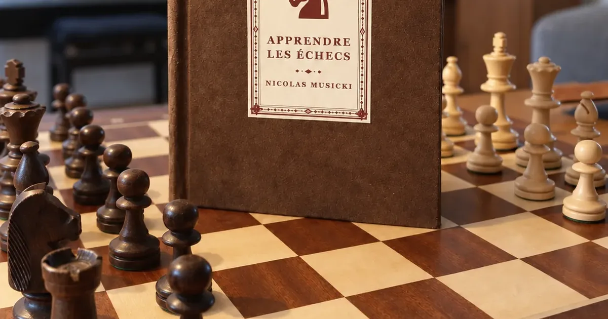

Transparence : je suis Nicolas Musicki, professeur d'échecs et auteur de ce site. Je vends aussi des cours, un livre et deux cahiers d'exercices. Je les cite seulement quand ils correspondent au profil décrit, et je précise à qui ils ne conviennent pas. Cet article n'est pas un comparatif indépendant ; il ne contient aucun lien affilié.
Au sommaire
Trois questions pour cerner le joueur
Avant de regarder les idées, prenez deux minutes pour répondre à ces questions. Elles évitent l'erreur la plus fréquente : offrir un cadeau pensé pour un autre joueur.
1. Où joue-t-il ?
- Surtout en ligne : le matériel compte moins pour lui. Un livre, des cours ou une sortie lui parleront davantage qu'une pendule.
- Sur un plateau, en famille ou entre amis : un bel objet ou une pendule changent vraiment ses parties.
- En club ou en tournoi : il a des besoins précis (pendule, feuilles de notation, préparation). Méfiez-vous des achats au hasard : demandez discrètement à un partenaire de club.
2. Quel est son niveau, approximativement ?
Pas besoin de connaître son classement au point près. Trois repères suffisent :
- Joueur occasionnel : il connaît les règles, joue pour le plaisir, sans méthode particulière.
- Joueur régulier : il joue plusieurs parties par semaine, en ligne ou en club, et cherche à s'améliorer.
- Joueur de compétition : il a un classement, joue des tournois et sait déjà ce qu'il veut travailler.
S'il joue en ligne, son profil public sur sa plateforme affiche souvent un classement. Attention, les échelles diffèrent d'un site à l'autre et ne se comparent pas directement au classement officiel : mon article sur le classement Elo explique pourquoi.
3. Qu'est-ce qui lui fait plaisir ?
Certains joueurs aiment les beaux objets, d'autres ne jurent que par la progression, d'autres encore apprécient surtout l'ambiance d'un tournoi ou d'une partie au café. Un cadeau réussi colle à ce goût-là, pas à l'idée qu'on se fait d'un « joueur d'échecs ».
Quel cadeau selon le profil ?
Voici un résumé. Les détails, les critères de choix et les limites de chaque idée suivent dans les sections suivantes.
| Profil | Idées qui marchent | Limite à garder en tête |
|---|---|---|
| Occasionnel, joue sur un plateau | Pendule simple, jeu de voyage, livre de méthode pour débutants | Une pendule ne sert que s'il a un partenaire de jeu régulier |
| Occasionnel, joue en ligne | Livre de son niveau, cahier d'exercices s'il débute encore, quelques cours | Un très bel échiquier risque de rester décoratif |
| Régulier qui veut progresser | Cours sur ses propres parties, livre sur un thème précis (tactique, finales) | Un livre d'ouvertures au hasard peut ne pas correspondre à son répertoire |
| Joueur de club ou de tournoi | Pendule avec incrément, inscription à un tournoi, cours ciblés | Il a souvent déjà ses habitudes : demandez avant d'acheter du matériel |
| Amateur de beaux objets | Pièces lestées de style Staunton, échiquier en bois, livre relié avec une page à son nom | Vérifiez que la taille des pièces correspond à celle des cases |
Améliorer le matériel
« Il a déjà un échiquier » ne veut pas dire qu'il a tout. Le matériel qui accompagne le plateau est souvent ce qui manque.
Une pendule d'échecs
C'est le cadeau classique pour un joueur qui joue sur un vrai plateau. La pendule donne un rythme aux parties et prépare au jeu en club.
- À privilégier : une pendule électronique qui propose l'incrément (quelques secondes ajoutées à chaque coup). C'est le réglage le plus courant en club et en tournoi, et il évite de perdre une partie gagnée simplement au temps.
- À vérifier : la simplicité du réglage. Une pendule qu'on met dix minutes à programmer finit par ne plus servir.
- Limite : sans partenaire de jeu régulier, elle restera dans sa boîte. Pour un joueur qui ne joue qu'en ligne, la plateforme gère déjà le temps.
Un jeu de pièces de meilleure qualité
Beaucoup de joueurs ont un premier échiquier pliable avec des pièces légères. Passer à des pièces plus grandes et plus lourdes change le plaisir de jouer.
- Le style Staunton : c'est le dessin de pièces utilisé en compétition. Chaque pièce se reconnaît au premier coup d'œil, ce qui compte plus que l'esthétique.
- Les pièces lestées : un poids dans la base les rend stables et agréables à déplacer. Une feutrine sous la base protège le plateau.
- La taille, avec l'échiquier qu'il possède déjà : les normes de la FIDE (la Fédération internationale des échecs) donnent un repère utile. Le roi y mesure environ 9,5 cm, les cases 5 à 6 cm de côté, et quatre pions doivent tenir à l'aise sur une case. Mesurez discrètement une case de son plateau avant d'acheter. Des pièces trop grandes débordent, des pièces trop petites semblent perdues.
- Limite : un beau jeu de pièces n'apporte rien à un joueur qui joue presque uniquement en ligne.
Source : FIDE Handbook, normes du matériel d'échecs (C.02), consulté le 22 novembre 2026.
Un échiquier de voyage ou magnétique
Pour un joueur qui a un beau plateau à la maison, un petit échiquier magnétique est le compagnon des trains, des vacances et des cafés. Les critères pour bien le choisir sont détaillés dans mon guide des échiquiers pliables.
- Limite : les petits formats sont moins confortables pour de longues parties. C'est un complément, pas un remplacement.
Un carnet de notation
Petit cadeau, vrai usage : un carnet pour noter ses parties. En partie longue officielle, chaque joueur doit noter ses coups et ceux de son adversaire. Les règles de la FIDE (article 8) prévoient une exception quand il reste moins de cinq minutes à la pendule sans incrément d'au moins 30 secondes. Un carnet permet aussi de garder ses parties pour les analyser ensuite.
- Limite : il n'intéresse vraiment que les joueurs qui jouent en club ou qui aiment revoir leurs parties. Seul, il peut sembler modeste : il se glisse facilement avec un autre cadeau.
L'aider à progresser
Pour beaucoup de joueurs, le cadeau qui fait le plus plaisir est celui qui les aide à gagner davantage de parties. C'est aussi le plus délicat à bien viser.
Des cours particuliers
Un joueur qui possède déjà son matériel a rarement eu quelqu'un pour regarder ses propres parties. C'est ce qu'un cours apporte et qu'une application ne remplace pas : repérer les erreurs qui reviennent et choisir quoi travailler en priorité.
- Pour qui : un joueur qui a envie de progresser et le temps de suivre quelques séances. Les cours conviennent du débutant au joueur de club.
- Ce que je propose : un bon cadeau à son prénom pour une ou plusieurs séances, à 40 € l'heure en visio ou 50 € l'heure à domicile à Paris et Versailles. Le premier cours est offert à chaque nouvel élève, y compris quand les séances sont offertes. Les séances se règlent au fil des cours, sans paiement à l'avance. Tous les détails sont sur la page offrir des cours d'échecs.
- Limite : des cours imposés à quelqu'un qui joue seulement pour se détendre peuvent ressembler à des devoirs. Si vous avez un doute, une seule séance découverte suffit pour qu'il se fasse une idée.
Pour comparer les options (professeur, club, plateformes), lisez combien coûte un cours d'échecs.
Un livre vraiment adapté à son niveau
Un livre d'échecs est un cadeau qui dure, à condition de viser juste. Quelques repères :
- Choisissez un thème plutôt qu'un titre célèbre : la tactique pour un joueur qui perd des pièces, les finales pour celui qui ne sait pas conclure, des parties commentées pour celui qui aime comprendre les plans.
- Méfiez-vous des livres d'ouvertures : ils supposent de savoir quelles ouvertures il joue. Un mauvais choix ne servira à rien.
- Feuilletez quelques pages : si chaque page est remplie de variantes sans explications, le livre s'adresse à un joueur confirmé.
- S'il débute encore ou joue sans méthode : parcourez le sommaire des 23 chapitres de mon livre, des règles aux finales, et la section « Est-ce le bon livre pour votre niveau ? ». Le guide PDF gratuit en reprend le premier volume : vous pouvez le feuilleter avant d'offrir.
- Limite : un livre demande du temps et de la régularité. Pour un joueur qui préfère pratiquer, des exercices ou des cours seront plus utiles.
Si le joueur stagne malgré beaucoup de parties, mon article sur la stagnation aux échecs vous aidera à identifier ce qui lui manque. Pour un amateur de fins de partie, voyez aussi le guide des finales.
Un abonnement ou un cours en ligne
Pour un joueur très connecté, un abonnement payant à une plateforme ou à un site de cours en ligne peut faire plaisir.
- À vérifier : ce que l'abonnement apporte de plus que la version gratuite qu'il utilise peut-être déjà. Lichess, par exemple, est entièrement gratuit.
- Limite : il ajoute du temps d'écran, et il se renouvelle parfois automatiquement. Prévenez la personne pour qu'elle puisse le gérer.
Offrir une expérience
Pour un joueur qui a déjà tout, les meilleurs souvenirs viennent souvent d'un moment plutôt que d'un objet.
- L'inscription à un tournoi : un open, un tournoi de parties rapides ou un tournoi de fin d'année. Vérifiez la date, le lieu et la cadence avec lui avant d'inscrire qui que ce soit : un tournoi engage du temps, parfois tout un week-end.
- Une saison en club : idéal pour un joueur qui ne joue qu'en ligne et aimerait jouer face à de vrais adversaires. Les tarifs varient d'un club à l'autre ; renseignez-vous directement auprès du club le plus proche. Le site de la Fédération française des échecs permet de trouver les clubs.
- Une partie dans un lieu agréable : un café-échecs, un parc l'été, une soirée de blitz entre amis. Ça ne coûte presque rien et ça se partage.
- Une soirée cinéma : pour un passionné qui aime aussi l'histoire du jeu, ma sélection de films et séries sur les échecs donne quelques idées.
Les fausses bonnes idées
- L'échiquier décoratif à thème (personnages de film, figurines stylisées) : joli sur une étagère, mais les pièces se reconnaissent mal. Un joueur ne l'utilisera pas pour jouer.
- Un deuxième échiquier du même type : s'il en a déjà un qui lui convient, mieux vaut viser ce qui l'accompagne.
- L'encyclopédie d'ouvertures pour un joueur occasionnel : trop dense, elle décourage plus qu'elle n'aide.
- Le cadeau « pour qu'il progresse » offert à quelqu'un qui joue pour se détendre : le message peut être mal reçu. Écoutez ce qu'il dit de son jeu avant de choisir.
Mes cours et mes ouvrages : pour qui, et pour qui pas ?
Je préfère être clair, puisque c'est moi qui les vends :
- Les cours particuliers conviennent à tous les niveaux, y compris au joueur de club, parce qu'ils partent de ses propres parties. C'est l'idée de cette page qui s'adapte le mieux à un joueur déjà équipé.
- Le livre Apprendre les Échecs (200 pages, relié et cousu à la main, 40,00 € envoi compris en France métropolitaine et en Belgique) est écrit pour les débutants et faux débutants, des règles aux finales. Il convient à un joueur occasionnel qui joue sans méthode. Il ne convient pas à un joueur de club ou de tournoi : il y retrouverait surtout ce qu'il sait déjà.
- Les cahiers d'exercices (15 € l'unité, 25 € les deux, envoi compris) proposent 50 positions de mats en un coup ou de tactiques simples. Ils sont faits pour les débutants qui connaissent le déplacement des pièces, pas pour un joueur confirmé. Ils existent aussi par deux ou en trio avec le livre (60 €).
Pour comparer le livre et les cahiers côte à côte, voyez la page Livres.
Une page personnalisée à l'intérieur du livre

Pour les 30 ans de Léo, un ami joueur confirmé, nous avons fabriqué un cahier unique : des positions choisies pour lui et, dès l'ouverture, une page à son nom. C'est souvent ce détail-là qu'on retient d'un cadeau.
Je peux faire la même chose pour le vôtre : une page personnalisée au début du livre relié ou d'un cahier, avec le prénom du destinataire, l'occasion et votre message. Par exemple :
- « Joyeux Noël Camille »
- « Joyeux anniversaire Papa, pour tes 60 ans »
- « Bonne retraite, et bonnes parties ! »
C'est une commande particulière : écrivez-moi avant de commander, avec le texte souhaité et la date à laquelle vous voulez recevoir le livre. Je vous confirme le délai et les conditions avant toute commande.
Les ouvrages sont en stock et livrés sous 7 jours maximum après validation du paiement, en France métropolitaine et en Belgique, selon les conditions de vente. Pour une date de réception précise, écrivez-moi avant de commander. Prix indiqués au 22 novembre 2026 ; le prix à jour figure sur la page de chaque ouvrage.
Offrir quelques séances à un joueur ?
Dites-moi son niveau approximatif et ce qu'il aime dans le jeu. Je vous réponds personnellement pour préparer le bon cadeau.
Préparer un bon cadeauQuestions fréquentes
Que peut-on offrir à un joueur d'échecs qui a déjà tout ?
Visez ce qui accompagne l'échiquier plutôt qu'un nouvel échiquier : une pendule avec incrément s'il joue sur un plateau, des cours sur ses propres parties s'il veut progresser, ou une inscription à un tournoi ou à un club s'il aime l'ambiance de la compétition.
Une pendule d'échecs est-elle un bon cadeau ?
Oui, pour un joueur qui joue régulièrement sur un plateau avec un partenaire. Choisissez un modèle électronique qui propose l'incrément et se règle facilement. Pour un joueur qui joue seulement en ligne, elle risque de ne pas servir.
Comment choisir un livre d'échecs sans connaître son niveau ?
Choisissez un thème plutôt qu'un titre : tactique, finales ou parties commentées. Évitez les livres d'ouvertures si vous ne savez pas ce qu'il joue, et feuilletez quelques pages : beaucoup de variantes sans explications signalent un livre pour joueur confirmé.
Peut-on offrir des cours d'échecs à un joueur confirmé ?
Oui. Pour un joueur expérimenté, les séances portent sur l'analyse de ses parties, le calcul, les finales, les ouvertures ou la préparation aux tournois. Le premier cours est offert ; une séance coûte ensuite 40 € en visio ou 50 € à domicile à Paris et Versailles.
Quelle taille de pièces choisir pour son échiquier ?
Mesurez une case de son échiquier. Les normes de la FIDE prévoient des cases de 5 à 6 cm de côté et un roi d'environ 9,5 cm, avec quatre pions qui tiennent à l'aise sur une case. Pour un plateau plus petit, choisissez des pièces proportionnellement plus petites.